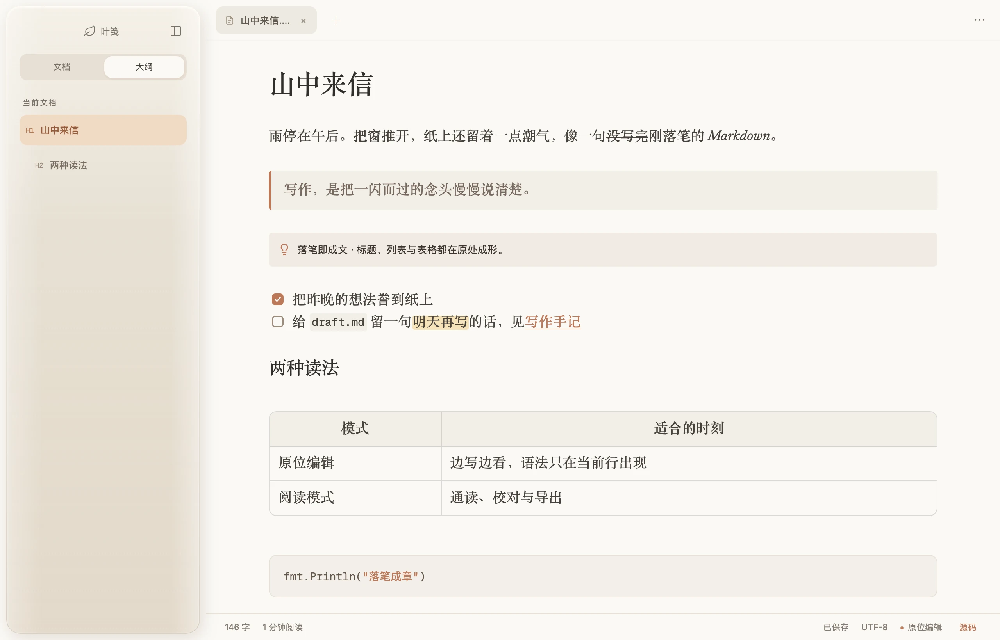
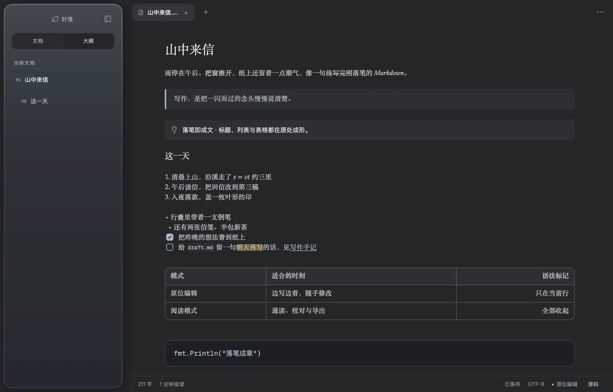
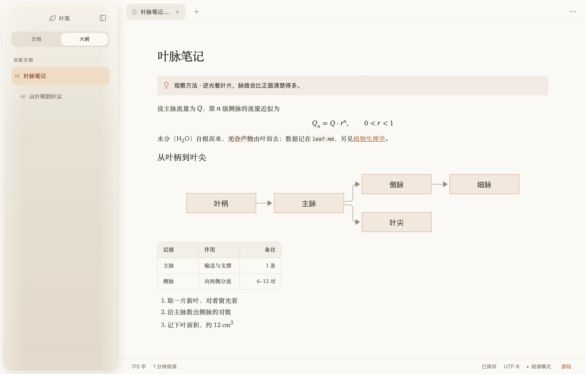
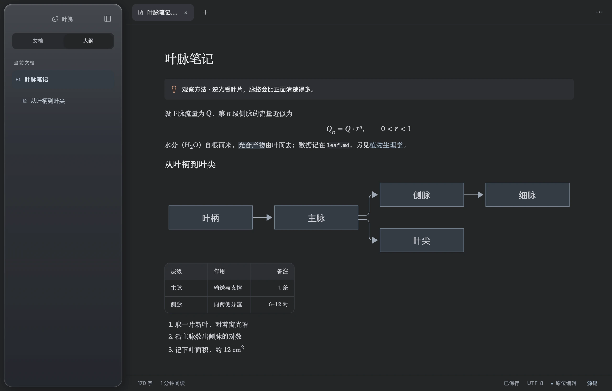

多标签，各记各的
每个标签保留自己的内容、选区和撤销历史。未保存的修改用圆点提示，意外退出后，草稿可以恢复为新标签。


##01原位编辑
原位编辑把 Markdown 直接渲染在正文里。光标所在的行会露出语法标记，方便修改；离开之后，又收回成排好版的文字。
想看全貌时，一键切到源码模式，完整的 Markdown 一字不差。
点一点右边的任意一行试试
Mod+Shift+R` 通读全文。##02功能
每个标签保留自己的内容、选区和撤销历史。未保存的修改用圆点提示，意外退出后，草稿可以恢复为新标签。
打开一个文件夹，浏览其中的 Markdown，按名称筛选、新建、重命名，并在访达或资源管理器中定位。近期文件随手可回。
以真实表格显示，双击进入编辑器：改单元格、增删与移动行列、调整对齐。一次保存对应一次撤销。
行内与块级公式原位显示，代码块按语言高亮；Mermaid 在阅读模式里绘成图形。
区分大小写、全词匹配、正则表达式，逐个替换或一次全部替换。
专注模式让其余段落退到远处，打字机模式把正在写的一行留在视线中央。
导出的 HTML 内嵌样式、本地图片与 Mermaid 图形，离线也能打开；PDF 交给系统打印。
四种字体，字号 12–28，行高 1.3–2.2，三档阅读宽度；浅色、深色，或跟随系统。
##03阅读模式
写完之后切到阅读模式，全文按 CommonMark 与 GFM 渲染：提示块、公式、图形与表格各归其位。点一下后面的窗口，把它拿到前面来。


##04本地优先
没有账号，没有专有格式。每一篇文档都是文件夹里的一份 Markdown，换一个编辑器照样打得开。
##05快捷键
常用动作都有默认快捷键，也可以在设置里录制、修改和恢复默认；冲突的组合不会被保存。
##下载
免费，开源，不需要注册。选择与你的设备对应的安装包。
安装包尚未配置 Apple 公证与 Windows 代码签名，首次运行时系统可能显示来源验证提示。Windows 版本已完成构建，尚未实机验证。全部文件与校验值见 GitHub Releases。